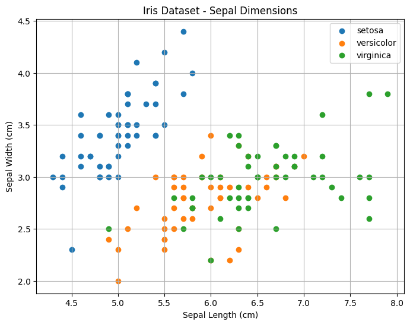

a = 1
b = 2
a*b2
Jupyter Notebooks and Google Colab are interactive computing environments widely used for data analysis, machine learning, and programming tutorials. Both platforms allow you to combine code, visualisations, explanatory text, and equations in one document, enhancing clarity, reproducibility, and collaboration.
A notebook is a special file format (with a .ipynb extension) that stores not only the code but also the outputs of that code (such as plots, tables, and text), as well as any markdown-formatted explanations. Under the hood, it’s a JSON document that wraps code, output, and metadata in a structured format, often rendered as HTML when viewed in a browser (e.g. on GitHub). This allows you to view the outputs of a notebook—even without running the code—when it’s shared online.
One important aspect of working with notebooks is that cells can be executed in any order, and their outputs are stored until cleared or overwritten. This means a notebook can appear to “work” even when the code is run out of sequence or relies on prior cell execution that hasn’t happened in a fresh session. Always restart the kernel and run all cells in order to ensure reproducibility.
Code cells can be interespersed with markdown cells (similar to mixed text and code chunks in Rmd or Quarto), such as below where we have a python code cell.
a = 1
b = 2
a*b2Google Colab allows users to leverage GPU or TPU resources for computationally intensive tasks such as deep learning. To enable GPU or TPU:
After you click save, your runtime is reloaded so your active session, variables and environment will be lost.
You can check this by adding a code cell below and seeing if
aandbstill exist
Google Colab provides seamless integration with Google Drive and GitHub, allowing users to efficiently manage and store notebooks:
Mastering keyboard shortcuts significantly boosts productivity:
| Action | Jupyter Shortcut | Colab Shortcut |
|---|---|---|
| Run Cell | Shift + Enter |
Shift + Enter |
| Add Cell Below | B (in command mode) |
Ctrl + M, then B |
| Add Cell Above | A (in command mode) |
Ctrl + M, then A |
| Delete Cell | D, D |
Ctrl + M, then D |
| Convert Cell to Markdown | M |
Ctrl + M, then M |
| Convert Cell to Code | Y |
Ctrl + M, then Y |
| Interrupt Execution | I, I |
Ctrl + M, then I |
| Help | H |
Ctrl + M, then H |
Note: Colab requires first pressing Ctrl + M to activate shortcuts.
Here is a simple example using numpy, pandas, and matplotlib to plot the famous Iris dataset:
Run the cell below using Shift + Enter to execute it and render the plot directly beneath the code.
import pandas as pd
import numpy as np
import matplotlib.pyplot as plt
from sklearn.datasets import load_iris
# Load the Iris dataset
iris = load_iris()
df = pd.DataFrame(data=iris.data, columns=iris.feature_names)
df["species"] = iris.target
# Plot sepal length vs. sepal width
plt.figure(figsize=(8, 6))
for species_id, species_name in enumerate(iris.target_names):
subset = df[df["species"] == species_id]
plt.scatter(subset.iloc[:, 0], subset.iloc[:, 1], label=species_name)
plt.xlabel("Sepal Length (cm)")
plt.ylabel("Sepal Width (cm)")
plt.title("Iris Dataset - Sepal Dimensions")
plt.legend()
plt.grid(True)
plt.show()
Ctrl + S or Command + S).